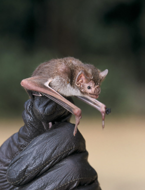
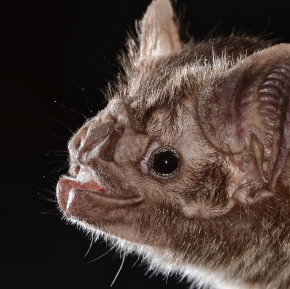
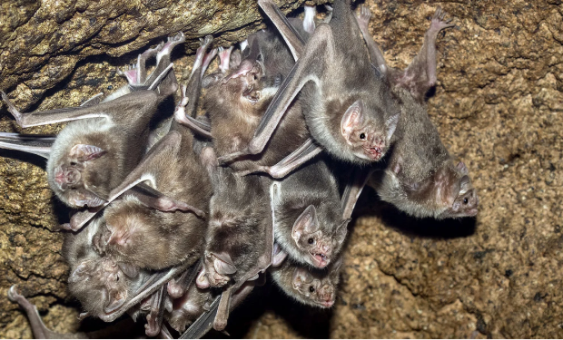

Desmodus rotundus
da família PhyllostomidaeO Desmodus rotundus, conhecido como morcego-vampiro-comum, é uma espécie de morcego da família Phyllostomidae, encontrada em toda a América Latina, desde o México até a Argentina. Este morcego é notável por sua dieta hematófaga, alimentando-se exclusivamente de sangue de mamíferos, principalmente de gado.
Sua pelagem é marrom-acinzentada na parte superior e um pouco mais clara na parte inferior. As asas são longas e membranosas, permitindo um voo ágil e silencioso.
O comportamento alimentar do morcego-vampiro é bastante especializado. Ele utiliza seus dentes afiados para fazer pequenos cortes na pele de suas presas e, em seguida, lambe o sangue que escorre. A saliva do morcego contém uma substância anticoagulante chamada draculina, que impede a coagulação do sangue da presa, facilitando a alimentação.
Em termos de habitat, o Desmodus rotundus prefere áreas úmidas e abrigadas, como cavernas, tocas e construções abandonadas. Eles são animais sociais, vivendo em colônias que podem variar de algumas dezenas a centenas de indivíduos. Dentro dessas colônias, os morcegos exibem comportamentos cooperativos, como o compartilhamento de alimentos e o cuidado mútuo.
"Passarinho que voa com morcego acorda de cabeça pra baixo."
Carolina Silveira
- Estado de Conservação: Estável
- Ordem: Chiroptera
- Família: Phyllostomidae
- Gênero: Desmodus
- Idade média: 20 anos
- Macho: 0,05 kg
- Fêmea: 0,04 kg
A reprodução ocorre durante todo o ano, com as fêmeas dando à luz um único filhote após um período de gestação de cerca de sete meses. Os filhotes são amamentados por aproximadamente três meses antes de começarem a se alimentar de sangue.
Taxonomicamente, o Desmodus rotundus foi descrito pela primeira vez por Étienne Geoffroy Saint-Hilaire em 1810. É uma das três espécies de morcegos-vampiros existentes, sendo as outras duas o morcego-vampiro-de-pernas-peludas e o morcego-vampiro-de-asas-brancas.
O Desmodus rotundus tem um impacto significativo na pecuária, pois suas mordidas podem transmitir doenças como a raiva. Por isso, são frequentemente considerados pragas em áreas rurais. No entanto, a pesquisa sobre sua saliva anticoagulante tem potencial para aplicações médicas, como no tratamento de doenças cardiovasculares.
Em resumo, o Desmodus rotundus é uma espécie fascinante tanto por suas adaptações únicas para a alimentação hematófaga quanto por seu comportamento social complexo. Embora seja visto como uma praga em algumas regiões, seu estudo oferece insights valiosos para a ciência e a medicina.
